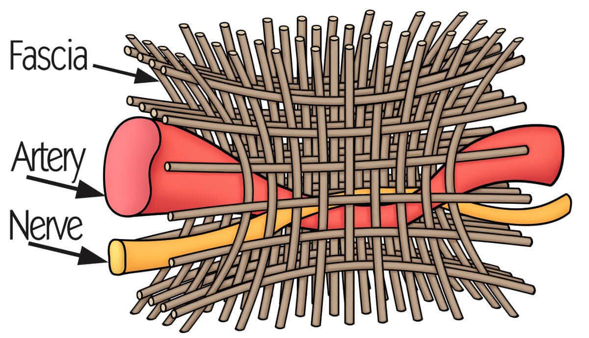
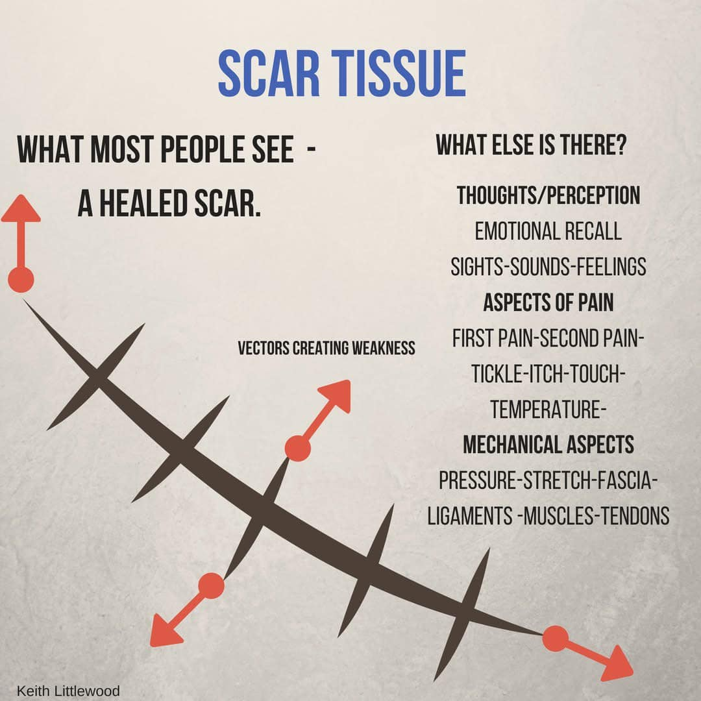

#疤痕 出奇蛋，多重願望一次滿足(咦
#疤痕 出奇蛋，多重願望一次滿足(咦
30+歲的年輕媽媽，因左邊臀部痛來就診，左臀側邊往大腿方向延伸，已經困擾3-4個月。起初還不以為意，認為應該會自己好，後來日漸加重變得無法忽視，連坐在椅子上都會感到不適，需要一直變換姿勢，治療也好一段時間，但仍反反覆覆，最近連躺著都開始感覺疼痛。
"光在外面候診的時候，就一直需要變換坐姿，實在坐不了太久"
原以為是跑者，運動訓練造成的疼痛，一問之下才發現，她的老公才是教練，她本身不太喜歡跑步，也沒有規律的運動模式，該拉筋按摩的都做過了，顯然可以排除因過度使用而導致的可能性。
根據脈象發現：右尺沉弱帶有細弦，當然沒有規律運動、久坐導致的核心無力是必須考慮的，針對核心肌群、腹直肌、髂腰肌進一步理學檢查。
躺下來，衣服一掀開，下腹部有一道淺淺的疤痕，追問之下原來是 #剖腹產 的關係，細摸疤痕發現，疤痕左半邊凹陷、扁塌，媽媽表示這個從生完之後一直就都是這樣，沒有痛也沒有怎樣，就沒有理會。
疤痕，其實是個糾結的軟組織，多層次的組織在縫合、癒合的時候，總是不比天生原廠的排列整齊、滑順。疤痕對於人體肌筋膜的力量傳遞與影響，毫無規則，常常超乎預期。
疤痕左半邊凹陷，當然成為我首要的處理程序，用針灸毫針處理左側凹陷的疤痕，大概2-3針的時間，左側凹陷已經慢慢鬆解開，恢復其該有的蓬鬆感，與右段疤痕相接更加一致。
處理完請媽媽坐起來嘗試，回饋：感覺左側臀部有鬆開、張開，感覺跟原本不太一樣。再次躺下，下一步處理腹部。
左側腹直肌，徒手觸摸就能摸到凹陷、緊縮的肌纖維團塊，乾針後，LTR+++++，針完之後追加左側髂腰肌，結束後再請媽媽坐起來嘗試。
然後我們坐著，就開始聊天，聊了大概15-20分鐘，我突然打斷她，請她感覺一下這段時間裡臀部的緊縮、痛感狀況如何。
她很驚訝的表示，以先前的狀況是不可能可以坐這麼久的，通常坐個3-5分鐘就會開始緊痛，必須要趕快換角度調姿勢。
從頭到尾，反射式直覺的臀中肌，完全沒有處理到。
到這裡心理的想法似乎可以獲得應證：因疤痕的影響，抑制了核腹直肌與髂腰肌，最後臀中肌出來代償到炸裂，日漸累積堆疊，然後就痛到不行。
解釋完上述思想法後，我請媽媽回去正常生活，不需要避免什麼動作或活動，並持續觀察左側臀部往大腿疼痛的狀況。
隔一周回來，媽媽回饋，這周臀部疼痛減少很多，還剩一點，但可以坐的時間明顯進步，另外還有一個意外收穫，原本容易脹氣、排氣的狀況，這禮拜少非常多！這點我上次沒有跟醫生說，但真的改善很多。
解除了疤痕的抑制，恢復了核心肌群的力量，連脹氣、排氣頻繁這類看似內科的問題也都一併獲得改善，真是一舉兩得，一箭雙鵰，事半功倍，非常合理但又非常驚喜(?!
肌筋膜軟組織，連接了裏層的內臟器官到外層的肌肉骨骼，其分布占比非常之大。
疤痕在其中所造成的影響也出乎意料超乎預期，甚至也有不少情緒壓抑隱藏在其中，疤痕對生理與心理的影響，真的不可忽略！
太初中醫診所
中醫師 黃彥鈞

